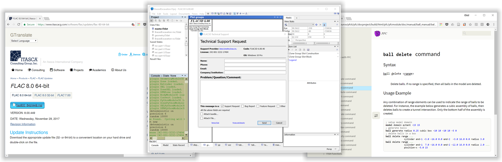

支持


图 1：软件支持有多种形式，包括 Itasca 网站上的代码更新、技术支持对话框以及与程序紧密集成的文档。
- 在程序内按
F1 - 查看 菜单上可用的选项
- 如果您正在处理命令，按
Ctrl + spacebar
以上是简版说明。详细版本包含在本节的内容中，涵盖：
- 程序文档
- 技术支持
- 安装
- 程序安全
- 程序更新
- 程序文档（主页有 ??）
- 命令工具
- 约定（语法高亮、文档视觉约定（超链接等）等）
- 文档集说明（+ 各处内容的位置？？？）
- 指南（推荐的阅读顺序）
- 技术支持（主页使用基本表述，并转载 EULA 中的一节）
- 技术支持对话框
- 技术支持政策
- 缺陷
- 培训
- 安装（主页有 3 个步骤）
- 安装（更完整的说明、布局、快捷键、卸载等）
- 网络许可证
- 系统要求
- 运行时间基准测试
- 安全（密钥图片——本地或网络）
- 获取密钥
- 许可证（是什么、如何查找）
- EULA（最终用户许可协议）
- 更新（如何获取）
- 获取修订版本号
有关故障排除、技术支持及其他方面的说明，请参阅上述主题。
意见、问题和反馈可发送至 PFC技术支持邮箱（PFCSupport@Itascacg.com）。
我们非常希望听到您的想法。非常感谢您的意见！
——PFC 6.0 开发团队
| 这些内容对您有帮助吗？… 版权与免责声明 |
FLAC3D © 2019, Itasca | 原文更新于 2020 年 10 月 8 日 |